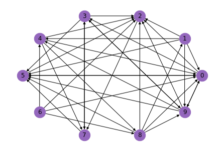
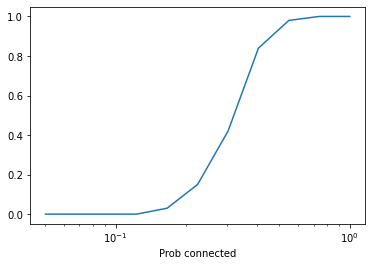
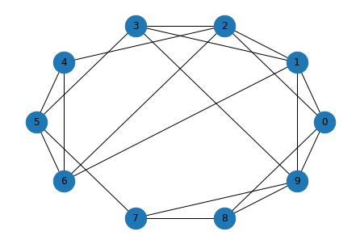
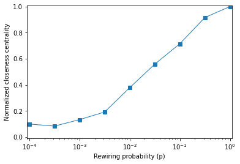

Quiz 1#
BEFORE YOU START THIS QUIZ:
Click on “Copy to Drive” to make a copy of the quiz
Click on “Share”,
Click on “Change” and select “Anyone with this link can edit”
Click “Copy link” and
Paste the link into this Canvas assignment. If you are not in my class, that link will not work for you.
This quiz is based on Chapters 2 and 3 of Think Complexity, 2nd edition.
Copyright 2021 Allen Downey, MIT License
Question 1#
For the first two questions, we will extend the Erdos-Renyi experiment to directed graphs.
NetworkX provides a function called erdos_renyi_graph that makes an Erdos-Renyi graph with n nodes and probability p that each edge exists.
With the keyword argument directed=True, it makes a directed graph. Here’s an example.
import networkx as nx
n = 10
p = 0.4
er = nx.erdos_renyi_graph(n, p, directed=True)
The following function draws the graph.
def draw_graph(G):
"""Draw a graph with node labels.
G: NetworkX graph
"""
nx.draw_circular(G, node_color='C4', node_size=500, with_labels=True)
draw_graph(er)

NetworkX also provides a function called is_strongly_connected, which takes a directed graph as a parameter and returns True if the graph is strongly connected.
Here’s how we can use it with the example graph.
nx.is_strongly_connected(er)
False
Fill in the body of the following function so it estimates the probability that a directed ER graph is strongly connected.
The number of graphs it should create is iters; it should return the fraction that are strongly connected.
def prob_strongly_connected(n, p, iters=100):
"""Estimates the probability that a directed ER graph is strongly connected.
n: number of nodes
p: probability each edge exists
iters: number of graphs to test
returns: the fraction of graphs that are strongly connected
"""
# FILL THIS IN
return 0
# Solution
def prob_strongly_connected(n, p, iters=100):
"""Estimates the probability that a directed ER graph is strongly connected.
n: number of nodes
p: probability each edge exists
iters: number of graphs to test
returns: the fraction of graphs that are strongly connected
"""
count = 0
for i in range(iters):
er = nx.erdos_renyi_graph(n, p, directed=True)
if nx.is_strongly_connected(er):
count += 1
return count/iters
Use the following cell to test your function.
prob_strongly_connected(n, p)
0.73
Question 2#
Now we’d like to see how the probability of being strongly connected depends on p.
First we’ll create an array with a range of values of p.
import numpy as np
ps = np.logspace(-1.3, 0, 11)
ps
array([0.05011872, 0.0676083 , 0.09120108, 0.12302688, 0.16595869,
0.22387211, 0.30199517, 0.40738028, 0.54954087, 0.74131024,
1. ])
Next we’ll call the function from the previous section with each value of p.
ys = [prob_strongly_connected(n, p) for p in ps]
ys
[0.0, 0.0, 0.0, 0.0, 0.03, 0.15, 0.42, 0.84, 0.98, 1.0, 1.0]
import matplotlib.pyplot as plt
plt.plot(ps, ys)
plt.xlabel('Prob of edge (p)')
plt.xlabel('Prob connected')
plt.xscale('log')

As you might have expected, there’s a a transition between two regimes:
For low values of
p, the probability of a strongly connected graph is low.For high values of
p, the probability of a strongly connected graph is high.
Do you expect the location of this transition to be higher or lower than the critical value, \(p^*\), derived by Erdos and Renyi? Why?
In the space below, write 1-3 clear, concise, complete sentences that explain your answer.
# Solution
"""I expect it to be higher because it is harder for a directed
graph to be strongly connected than for an undirected graph to be connected;
that is, I expect it to take more edges.
For example, if we start with a connected undirected graph and make it directed
by making all of the edges one-way, there's a good chance the result is not
strongly connected. It's likely we would have to add edges to make it strongly
connected.
""";
Question 3#
NetworkX provides a function called watts_strogatz_graph that makes a Watts-Strogatz graph with n nodes, where each node is connected to k others, and the probability of rewiring an edge is p.
Here’s an example.
n = 10
k = 4
p = 0.2
ws = nx.watts_strogatz_graph(n, k, p)
draw_graph(ws)

NetworkX also provides a function called closeness_centrality that computes, for each node, a metric called “closeness centrality”, which you can read about here.
Here’s how it works.
nx.closeness_centrality(ws)
{0: 0.6,
1: 0.6923076923076923,
2: 0.6428571428571429,
3: 0.6428571428571429,
4: 0.5294117647058824,
5: 0.6,
6: 0.6,
7: 0.5625,
8: 0.5294117647058824,
9: 0.6428571428571429}
Fill in the body of the following function so that it creates one Watts-Strogatz graph with the given parameters and returns the mean closeness centrality, averaged across the nodes.
def mean_closeness_centrality(n, k, p):
"""Compute the average of the closeness centrality for each node.
n: number of nodes
k: number of edges for each node
p: probability of rewiring
"""
# FILL THIS IN
return 0
# Solution
def mean_closeness_centrality(n, k, p):
"""Compute the average of the closeness centrality for each node.
n: number of nodes
k: number of edges for each node
p: probability of rewiring
"""
ws = nx.watts_strogatz_graph(n, k, p)
d = nx.closeness_centrality(ws)
return np.mean(list(d.values()))
Use the following cell to test your function.
mean_closeness_centrality(n, k, p)
0.6269093406593408
Question 4#
The following function runs mean_closeness_centrality for a range of values for p and returns an array of mean closeness centralities, one for each value of p.
def run_experiment(ps, n=1000, k=10):
"""Computes mean closeness centrality for WS graphs with a range of `p`.
ps: sequence of `p` to try
n: number of nodes
k: degree of each node
returns: array of mean closeness_centrality
"""
res = []
for p in ps:
metric = mean_closeness_centrality(n, k, p)
res.append(metric)
return np.array(res)
Now we’ll run it with an array of values for p. This might take a few seconds.
ps = np.logspace(-4, 0, 9)
ps
array([1.00000000e-04, 3.16227766e-04, 1.00000000e-03, 3.16227766e-03,
1.00000000e-02, 3.16227766e-02, 1.00000000e-01, 3.16227766e-01,
1.00000000e+00])
mcc = run_experiment(ps)
mcc
array([0.03043911, 0.02560553, 0.04070766, 0.05863695, 0.1156313 ,
0.17090281, 0.21877453, 0.28035792, 0.30610306])
If your code in the previous section did not work, you can use the following values:
# mcc = np.array([0.03043911, 0.02560553, 0.04070766, 0.05863695, 0.1156313, 0.17090281, 0.21877453, 0.28035792, 0.30610306])
We’ll normalize the values in mcc so the last one is 1.0
M = mcc / mcc[-1]
And plot the results.
plt.plot(ps, M, 's-', linewidth=1, label='M(p) / M(0)')
plt.xlabel('Rewiring probability (p)')
plt.xscale('log')
plt.ylabel('Normalized closeness centrality')
plt.xlim([0.00009, 1.1])
plt.ylim([-0.01, 1.01]);

Suppose another student in the class asked you to interpret this graph. In a few clear, concise, complete sentences, explain what closeness centrality means in the context of a social network. What, if anything, does this graph tell us about small world graphs?
# Solution
"""
For each node, centrality closeness is the inverse of the
mean distance to all other nodes, so high closeness means a node
is close to all other nodes.
In a social network, that means the average number of degrees of
separation is small.
If the average closeness in a graph is high, that means that
distances between nodes are short, as in a small world graph.
In this example, `mcc` does not increase as fast as I expected.
You have to rewire a lot of edges to get high `mcc`.
So it looks like there may be no range of ps where both clustering
and closeness are high.
""";